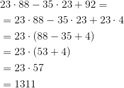

Operații cu numere naturale-exerciții
- Efectuați următoarele calcule:
-
 ;
; - ;
 ;
; ;
; ;
; ;
;![\left [ (9^2-2^4\cdot5):1+(3+3\cdot105):106 \right ]^2](https://liceunet.ro/media/webbooks/667/5913/images/equations/qa1g83i2hj-fu7hr0v-ina==.gif) ;
;![100^2\cdot\left \{ \left [ (4389-102)\cdot12+45^0\cdot9^7:3:3^{14}\right ]\cdot 100\right \}](https://liceunet.ro/media/webbooks/667/5913/images/equations/sy2wvq-l37catcik87qb6a==.gif) ;
;![\left \{\left [ (36^4:3^8)^{14:7}-121^{56}:11^{110} \right ]^{5^0} \right \}:5](https://liceunet.ro/media/webbooks/667/5913/images/equations/_ukjduzfjo3mmpbgoccu9q==.gif) ;
; .
.
-
Rezolvare:
- Avem:

;
- Avem:

 ;
;
- Avem:

 ;
;
- Avem:

 ;
;
- Avem:

 ;
;
- Avem:

 ;
;
- Avem:
![\begin{align*} &\left [ (9^2-2^4\cdot5):1+(3+3\cdot105):106 \right ]^2=\\ &=\left [ (81-16\cdot 5):1+(3+315):106 \right ]^2\\ &=\left [ (81-80):1+318:106 \right ]^2\\ &=\left ( 1:1+3 \right )^2\\ &=(1+3)^2\\ &=4^2\\ &=16 \end{align*}](https://liceunet.ro/media/webbooks/667/5913/images/equations/-c4opkm010lhx9avax6loq==.gif)
![\begin{align*} \Rightarrow \left [ (9^2-2^4\cdot5):1+(3+3\cdot105):106 \right ]^2=16 \end{align*}](https://liceunet.ro/media/webbooks/667/5913/images/equations/8um8bqrznpefinvbpkzmfw==.gif) ;
;
- Avem:
![\begin{align*} &100^2\cdot\left \{ \left [ (4389-102)\cdot12+45^0\cdot9^7:3^{14}\right ]\cdot 100\right \}=\\ &=10000\cdot\left [ (4287\cdot12+1\cdot(3^2)^7:3^{14})\cdot100 \right ]\\ &=10000\cdot\left [ (51444+1\cdot3^{14}:3^{14})\cdot100 \right ]\\ &=10000\cdot\left [ (51444+3^{14}:3^{14})\cdot100 \right ]\\ &=10000\cdot\left [ (51 444+3^{14-14})\cdot100 \right ]\\ &=10000\cdot\left [ (51444+3^0)\cdot100 \right ]\\ &=10000\cdot\left [ (51 444+1)\cdot100 \right ]\\ &=10000\cdot(51 445\cdot100)\\ &=10000\cdot 5144500\\ &=51 445 000 000 \end{align*}](https://liceunet.ro/media/webbooks/667/5913/images/equations/i5uc5gbcn6obetxws-m-wg==.gif)
![\begin{align*} \Rightarrow 100^2\cdot\left \{ \left [ (4389-102)\cdot12+45^0\cdot9^7:3^{14}\right ]\cdot 100\right \}=51 445 000 000 \end{align*}](https://liceunet.ro/media/webbooks/667/5913/images/equations/oen6qalbmzuankgnynxzyq==.gif) ;
;
- Avem:
![\begin{align*} &\left \{\left [ (36^4:3^8)^{14:7}-121^{56}:11^{110} \right ]^{5^0} \right \}:5=\\ &=\left \{ \left [ ((6^2)^4:3^8)^{2}-(11^2)^{56}:11^{110}\right ]^1 \right \}\:5\\ &=\left \{ \left [ (6^8:3^8)^2-11^{112} :11^{110}\right ]^1\right \}:5\\ &=\left [ ((6:3)^8)^2 -11^{112-110}\right ]:5\\ &=\left [ (2^8)^2-11^2 \right ]:5\\ &=(2^{8\cdot2}-121):5\\ &=(2^{16}-121):5\\ &=(65 536-121):5\\ &=65 415:5\\ &=13 083 \end{align*}](https://liceunet.ro/media/webbooks/667/5913/images/equations/l0k6mvbe-dddmk12lbnh5a==.gif)
![\begin{align*} \Rightarrow \left \{\left [ (36^4:3^8)^{14:7}-121^{56}:11^{110} \right ]^{5^0} \right \}:5=13 083 \end{align*}](https://liceunet.ro/media/webbooks/667/5913/images/equations/oqaov5e8yeuaoff7-56pzg==.gif) ;
;
- Avem:
 .
.
- Știind că suma a două numere naturale este
 , iar primul număr este cu
, iar primul număr este cu  mai mare decât al doilea, aflați numerele.
mai mare decât al doilea, aflați numerele.
Rezolvare:
Fie  și
și  numerele căutate.
numerele căutate.
Știm că suma numerelor este , iar primul număr este cu mai mare decât al doilea, adică:
Înlocuind pe în adunare se obține o relație în care avem doar necunoscuta :

Atunci:

Deci, numerele căutate sunt  și
și  .
.
Se observă că  și
și  , adică este cu mai mare decât .
, adică este cu mai mare decât .
- Într-un magazin sunt de sticle de suc. Dacă se vând
 sticle pe zi, de câte zile sunt necesare pentru a vinde tot sucul?
sticle pe zi, de câte zile sunt necesare pentru a vinde tot sucul?
Rezolvare:
Pentru a vedea câte zile sunt necesare pentru a vinde tot sucul, împărțim numărul total de sticle la numărul de sticle care se vând într-o zi:

Observăm că dacă se vând sticle pe zi, după  de zile ne mai rămân
de zile ne mai rămân  sticle.
sticle.
Numărul de zile necesar pentru a vinde întreaga marfă este  de zile: cele de zile în care am vândut câte sticle, plus o zi în care s-a vândut restul de sticle.
de zile: cele de zile în care am vândut câte sticle, plus o zi în care s-a vândut restul de sticle.
- Diferența a două numere este
 . Aflați numerele, știind că primul număr este triplul celui de al doilea număr.
. Aflați numerele, știind că primul număr este triplul celui de al doilea număr.
Rezolvare:
Fie și numerele căutate.
Știm că suma lor este , iar primul este triplul celui de-al doilea, adică:

Înlocuim pe în prima relație și obținem:

Am obținut că  .
.
Atunci:
Așadar, numerele căutate sunt  și
și  .
.
- Comparați numerele
 și
și  știind că
știind că  și
și  .
.
Rezolvare:
Aducem numerele la o formă mai simplă:

Am obținut astfel că  și
și  .
.
Dintre două puteri cu același exponent, mai mare este acela cu baza mai mare, deci:

De asemenea, 
O proprietate a înmulțirii spune că oricare ar fi numerele naturale  și
și  , dacă
, dacă  și
și  , atunci .
, atunci .
Prin urmare,  , de unde obținem că
, de unde obținem că  .
.
- Într-o livadă sunt
 pomi fructiferi. Câți litri de apă sunt necesari pentru a uda întreaga livadă, știind că pentru un pom avem nevoie de
pomi fructiferi. Câți litri de apă sunt necesari pentru a uda întreaga livadă, știind că pentru un pom avem nevoie de  litri de apă?
litri de apă?
Rezolvare:
Știm că pentru un singur pom avem nevoie de litri de apă. Cum în livadă sunt de pomi, înseamnă că:
- primul pom- litri
- al doilea pom- litri
- al treilea pom- litri
……………….
- ultimul pom (al -lea)- litri.
Astfel, ar trebui să calculăm  .
.
Înmulțirea este adunare repetată, relația de mai sus este echivalentă cu  .
.
În concluzie, avem nevoie de  litri de apă pentru a uda întreaga livadă de pomi fructiferi.
litri de apă pentru a uda întreaga livadă de pomi fructiferi.
- Ordonați crescător numerele :
 .
.
Rezolvare:
Aducând numerele la o formă mai simplă obținem:

- Calculați
 , știind că
, știind că  și
și  .
.
Rezolvare:
Termenul  îl scriem ca fiind suma . Scriind în acest fel, putem da factor comun pe între primi doi termini și pe între ultimi doi termini, obținând în paranteze sumele care se dau în enunț.
îl scriem ca fiind suma . Scriind în acest fel, putem da factor comun pe între primi doi termini și pe între ultimi doi termini, obținând în paranteze sumele care se dau în enunț.
Astfel, succesiv, avem că:


- Suma a două numere este
 . Aflați numerele, știind că împărțind primul număr la al doilea, se obține câtul
. Aflați numerele, știind că împărțind primul număr la al doilea, se obține câtul  și restul
și restul  .
.
Rezolvare:
Fie și numerele căutate.
Știm că:

Din teorema împărțirii cu rest avem că  .
.
Înlocuim pe în sumă obținem:

Cum  , rezultă că:
, rezultă că:

Numerele căutate sunt și  .
.
Se observă că  .
.
- Arătați că nu există numere naturale care împărțite la dau restul și împărțite la
 dau restul
dau restul  .
.
Rezolvare:
Fie un număr natural oarecare.
Presupunem că:

Din teorema împărțirii cu rest, avem:


Observăm că împărțind pe la  obținem
obținem  resturi diferite, ceea ce este absurd.
resturi diferite, ceea ce este absurd.
În concluzie, nu există numere care împărțite la dau restul și împărțite la dau restul .